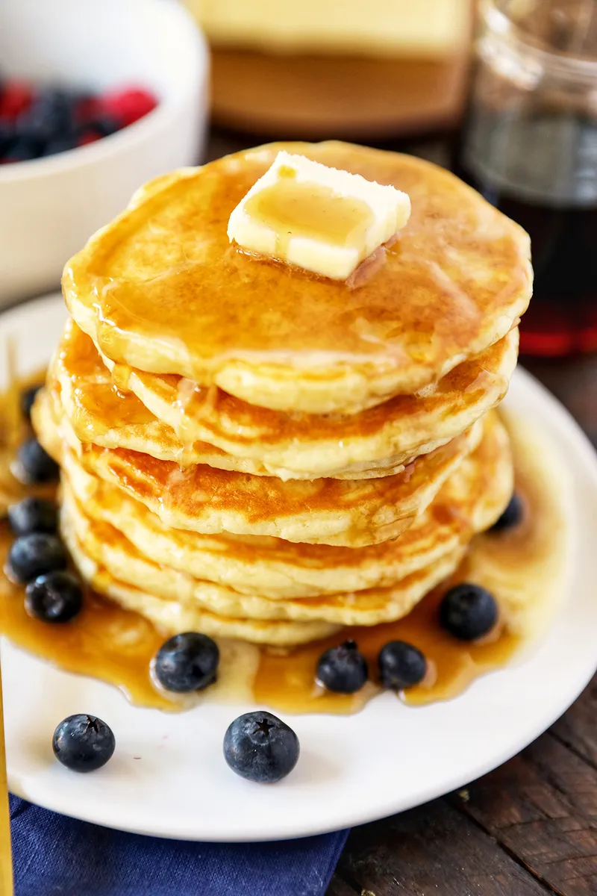

Buttermilk Pancakes

Description
This is a great buttermilk pancake recipe. It is one of my son's favorites. This recipe makes 4 large pancakes.
Ingredients
- 1 cup all-purpose flour
- 1 tablespoon white sugar
- 1 teaspoon baking powder
- 1/2 teaspoon baking soda
- 1/4 teaspoon salt
- 1 cup buttermilk
- 1 cup milk
- 1 tablespoon lemon juice
- mix and let sit for ~15 minutes
- 2 tablespoons and 2 teaspoons milk
- 1 egg
- 2 tablespoons melted butter
Directions
- In a large bowl, combine flour, sugar, baking powder, baking soda, and salt. In a separate bowl, beat together buttermilk, milk, eggs and melted butter. Keep the two mixtures separate until you are ready to cook.
- Heat a lightly oiled griddle or frying pan over medium high heat. You can flick water across the surface and if it beads up and sizzles, it's ready!
- Pour the wet mixture into the dry mixture, using a wooden spoon or fork to blend. Stir until it's just blended together. Do not over stir! Pour or scoop the batter onto the griddle, using approximately 1/2 cup for each pancake. Brown on both sides and serve hot.
Nutrition Facts
Per Serving: 219 calories; protein 7.2g; carbohydrates 30.7g; fat 7.4g; cholesterol 63.3mg; sodium 515.5mg.
Link